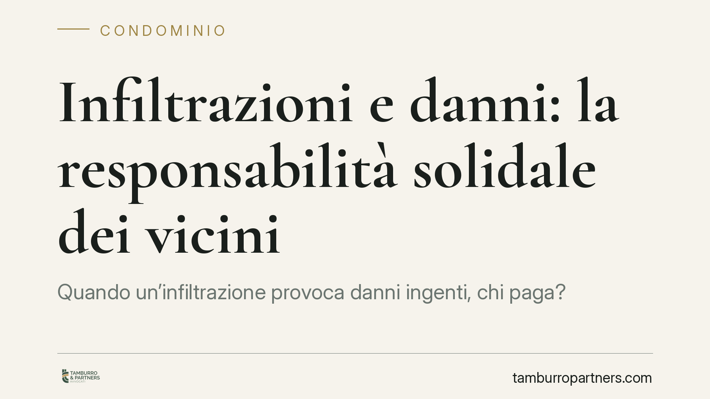

Infiltrazioni e danni: la responsabilità solidale dei vicini
Quando un'infiltrazione provoca danni ingenti, chi paga? La Cassazione ribadisce che condomìni e proprietari privati coinvolti rispondono in solido: il danneggiato può pretendere l'intero risarcimento da uno solo di essi, salvo poi il diritto di rivalsa tra i corresponsabili. Una regola che semplifica la tutela di chi subisce il danno e complica la posizione di chi vi ha concorso.

Il caso
Un imprenditore vede i propri locali allagati da infiltrazioni provenienti da più unità immobiliari sovrastanti. Alcune riconducibili a parti comuni condominiali, altre a proprietà private. La domanda pratica è semplice: deve chiamare in causa tutti i responsabili e ripartire pro quota il danno, oppure può rivolgersi a uno solo di essi per ottenere l'intero?
La Cassazione conferma la seconda soluzione, in applicazione dell'art. 2055 del codice civile.
Inquadramento normativo
L'art. 2055, primo comma, cod. civ. stabilisce che «se il fatto dannoso è imputabile a più persone, tutte sono obbligate in solido al risarcimento del danno». La solidarietà significa che il creditore-danneggiato può esigere l'intera prestazione da ciascun debitore, senza doverla frazionare tra tutti.
Il secondo comma prevede poi che chi ha risarcito l'intero danno ha regresso — cioè diritto di farsi rimborsare — verso gli altri corresponsabili, «nella misura determinata dalla gravità della rispettiva colpa e dall'entità delle conseguenze che ne sono derivate». Il terzo comma aggiunge una presunzione: nel dubbio, le colpe si presumono uguali.
È importante un punto spesso frainteso: la solidarietà opera anche quando le condotte sono autonome e distinte, purché abbiano concorso a produrre l'unico evento dannoso. Non serve un accordo tra i responsabili, né un'identica fonte di responsabilità. Possono così rispondere in solido un condominio (per un difetto delle parti comuni ex art. 2051 cod. civ.) e un privato proprietario (per un guasto interno alla sua unità), a fronte del medesimo danno da infiltrazione.
Implicazioni pratiche
Per chi subisce il danno, la pronuncia rappresenta un'agevolazione processuale concreta. Non è tenuto a individuare con precisione la quota di responsabilità di ciascuno né a citare in giudizio tutti i soggetti coinvolti. Può concentrare l'azione sul debitore più solvibile o più facilmente raggiungibile e ottenere da lui l'intero risarcimento.
Per chi ha concorso al danno, la prospettiva è opposta. Anche una responsabilità marginale può tradursi nell'obbligo di anticipare l'intero importo, salvo poi attivarsi in un secondo momento per recuperare le quote altrui tramite l'azione di regresso. Il rischio economico non si esaurisce, ma si sposta nel tempo e dipende dalla solvibilità degli altri corresponsabili.
Per il condominio, ciò conferma che l'amministratore può essere chiamato a rispondere per l'intero anche quando la causa dell'infiltrazione è in parte imputabile a un singolo condòmino. La ripartizione interna avverrà poi in sede di regresso, ma non è opponibile al danneggiato.
Sul piano assicurativo, la solidarietà rende centrale la verifica delle polizze: quella condominiale globale fabbricati e quelle individuali dei singoli proprietari possono sovrapporsi, con questioni di coordinamento tra compagnie che è bene anticipare.
Cosa fare in concreto
- Documenta subito il danno. Fotografa, filma e fai redigere una perizia tecnica che accerti l'origine delle infiltrazioni e quantifichi il pregiudizio, prima che le tracce vengano cancellate dai ripristini.
- Individua tutte le possibili fonti. Anche se puoi agire contro uno solo, mappare l'intera catena dei responsabili è utile per scegliere il soggetto più solvibile e per predisporre l'eventuale regresso.
- Verifica le coperture assicurative. Controlla la polizza condominiale e sollecita l'amministratore a coinvolgere la compagnia; se sei tu il potenziale responsabile, apri il sinistro senza ritardo.
- Formalizza una richiesta scritta e circostanziata, con quantificazione del danno e termine per il riscontro, così da interrompere la prescrizione e agevolare una definizione stragiudiziale.
- Conserva la documentazione di spesa relativa ai lavori di ripristino e alle perdite subite (fermo attività, danni alle merci), perché su di essa si fonda la prova del quantum risarcibile.
La solidarietà non stabilisce chi, in ultima analisi, sopporterà il costo del danno: definisce solo chi paga per primo. La distribuzione finale resta affidata alla valutazione delle rispettive colpe. Per questo, tanto per il danneggiato quanto per i corresponsabili, la ricostruzione tecnica delle cause è il vero terreno decisivo.
---
Contributo informativo a cura di Tamburro & Partners – Avv. Giuseppe Tamburro. Non costituisce parere legale.
Ogni condominio ha una storia a sé.
Se gestisci un'amministrazione e vuoi un confronto su una specifica questione condominiale, scrivi allo studio. Ti rispondiamo entro un giorno lavorativo.